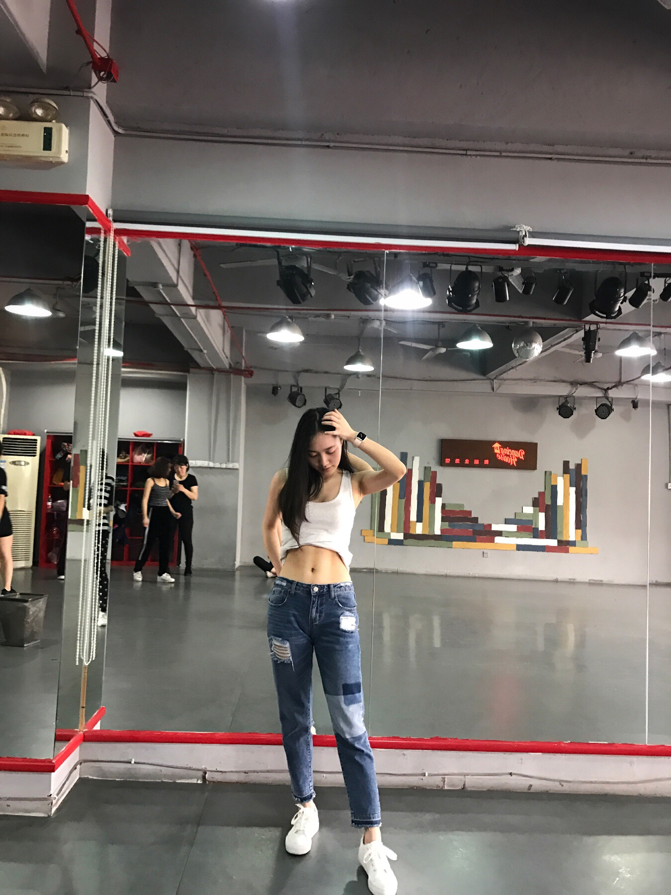

正文: 有，健身。
13年办了卡，一直坚持到现在，健身路上一去不返。
翻到一条14年发的纪念微博。
可能是当时推销健身的人太厉害了哈哈哈就跟着他一起去了健身房，没说两句就办了卡，是就我了解的我的朋友圈里最早接触健身的了，五年真的好快，当时才刚刚大二开学
一路摸索过来，真的很开心也有一点自豪，能那么早接触到健身，并且坚持了下来，看着自己慢慢有了马甲线
身体素质也越来越好～因为健身变得更加自律，有时候朋友会说我像个老年人哈哈哈，从来不吃宵夜，早上6点左右起床，晚上11点前睡觉。一年几乎不会生病。

平时穿衣服的时候是这样
感谢健身带给我太多东西❤️会一直坚持到底
也祝大家五一节快乐～！